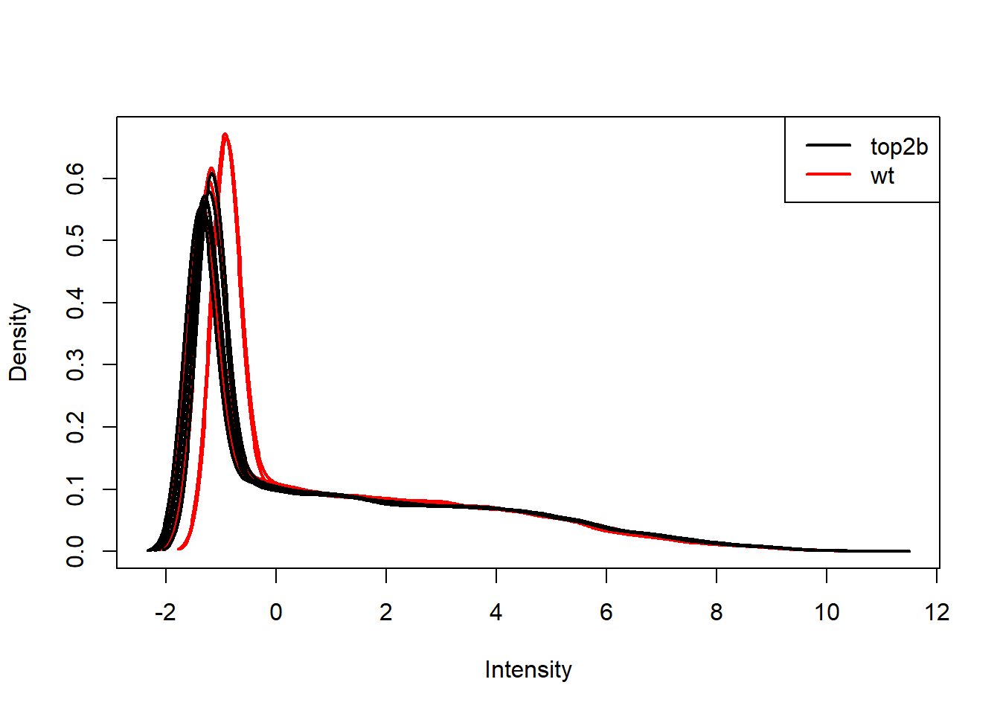
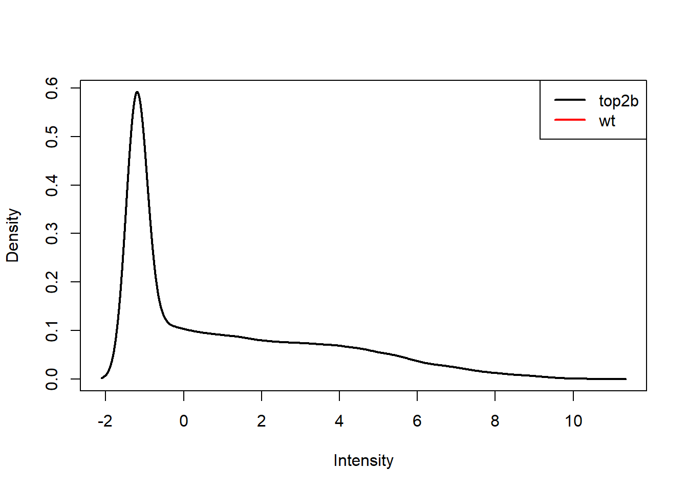
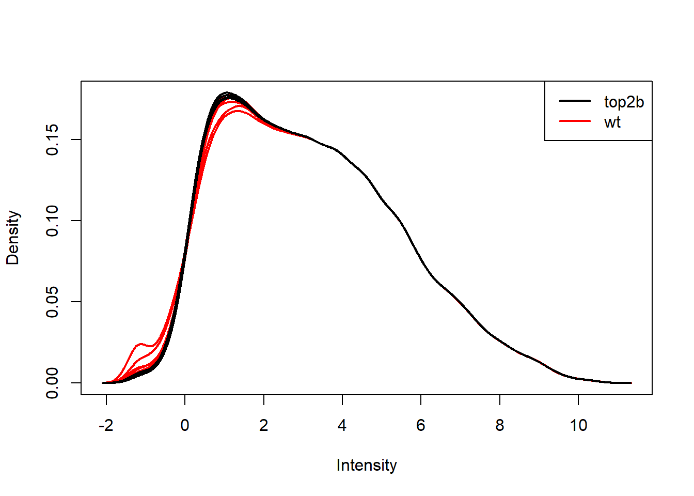

Differential expression analysis for studies with a 2x2 factorial design
John Blischak
Last updated: 2018-06-15
workflowr checks: (Click a bullet for more information)-
✔ R Markdown file: up-to-date
Great! Since the R Markdown file has been committed to the Git repository, you know the exact version of the code that produced these results.
-
✔ Environment: empty
Great job! The global environment was empty. Objects defined in the global environment can affect the analysis in your R Markdown file in unknown ways. For reproduciblity it’s best to always run the code in an empty environment.
-
✔ Seed:
set.seed(12345)The command
set.seed(12345)was run prior to running the code in the R Markdown file. Setting a seed ensures that any results that rely on randomness, e.g. subsampling or permutations, are reproducible. -
✔ Session information: recorded
Great job! Recording the operating system, R version, and package versions is critical for reproducibility.
-
Great! You are using Git for version control. Tracking code development and connecting the code version to the results is critical for reproducibility. The version displayed above was the version of the Git repository at the time these results were generated.✔ Repository version: d979358
Note that you need to be careful to ensure that all relevant files for the analysis have been committed to Git prior to generating the results (you can usewflow_publishorwflow_git_commit). workflowr only checks the R Markdown file, but you know if there are other scripts or data files that it depends on. Below is the status of the Git repository when the results were generated:
Note that any generated files, e.g. HTML, png, CSS, etc., are not included in this status report because it is ok for generated content to have uncommitted changes.Ignored files: Ignored: .Rhistory Ignored: .Rproj.user/ Untracked files: Untracked: code/counts_per_sample.txt Untracked: code/table-s1.txt
Expand here to see past versions:
| File | Version | Author | Date | Message |
|---|---|---|---|---|
| Rmd | d979358 | John Blischak | 2018-06-15 | Use all lowercase variables for dox phenotypes. |
| Rmd | c361225 | John Blischak | 2018-05-30 | Experiment with normalizing and filtering doxorubicin data. |
| html | 9b58c25 | John Blischak | 2018-05-23 | Build site. |
| html | 79a1ea4 | John Blischak | 2018-05-23 | Build site. |
| Rmd | 3e36241 | John Blischak | 2018-05-23 | Update to 1.0 |
| html | 3e36241 | John Blischak | 2018-05-23 | Update to 1.0 |
| html | 67f13a4 | John Blischak | 2018-03-09 | Build site. |
| Rmd | a2fc9a7 | John Blischak | 2018-03-09 | Minor edits to ch04 solutions |
| html | b2dc653 | John Blischak | 2018-01-25 | Build site. |
| Rmd | dc82382 | John Blischak | 2018-01-25 | Minor updates to Ch 04 analysis. |
| html | 7f4d46b | John Blischak | 2018-01-11 | Build site. |
| Rmd | 5db0175 | John Blischak | 2018-01-11 | Organize Ch 04 |
Analayze microarray data from Zhang et al., 2012, which measured gene expression in hearts from wild type and Top2b null mice treated with doxorubicin or a control.
library("Biobase")
library("ggplot2")
library("limma")
eset <- readRDS("../data/ch04.rds")Studies with a 2x2 factorial design (Video)
Describe the scientific question, the experimental design, and the data collected for the 2x2 factorial study.
Expression level of Top2b
Create a boxplot of the expression level of Top2b to confirm the null mice have lower levels of Top2b expression. Use pData and table to access and explore the phenotype measurements to be used in the plot.
head(fData(eset)) probe chrom start end symbol ensembl
1 A_55_P2051983 chr18 62753954 62753895 Spink7 ENSMUST00000076194
2 A_52_P169082 chr11 76031955 76032014 Dbil5
3 A_30_P01028193 chr14 47982421 47982480
4 A_52_P237997 chr3 156834624 156834683 Negr1
5 A_51_P414243 chr9 121890800 121890741 C85492 ENSMUST00000084743
6 A_55_P2136348 chr9 120003293 120003352 Ccr8 ENSMUST00000048777
refseq entrez name
1 NM_001001803 408198 serine peptidase inhibitor, Kazal type 7 (putative)
2 NM_021294 13168 diazepam binding inhibitor-like 5
3 NA
4 NM_177274 320840 neuronal growth regulator 1
5 NM_153540 215494 expressed sequence C85492
6 NM_007720 12776 chemokine (C-C motif) receptor 8top2b <- exprs(eset)[fData(eset)$symbol == "Top2b", ]
head(pData(eset)) title genotype treatment
wt.pbs.r1 WT Cardiomyocytes 16hr after PBS rep1 wt pbs
wt.pbs.r2 WT Cardiomyocytes 16hr after PBS rep2 wt pbs
wt.pbs.r3 WT Cardiomyocytes 16hr after PBS rep3 wt pbs
wt.dox.r1 WT Cardiomyocytes 16hr after doxorubicin rep1 wt dox
wt.dox.r2 WT Cardiomyocytes 16hr after doxorubicin rep2 wt dox
wt.dox.r3 WT Cardiomyocytes 16hr after doxorubicin rep3 wt dox
rep
wt.pbs.r1 r1
wt.pbs.r2 r2
wt.pbs.r3 r3
wt.dox.r1 r1
wt.dox.r2 r2
wt.dox.r3 r3d <- data.frame(pData(eset), top2b)
ggplot(d, aes(x = treatment, y = top2b, fill = genotype)) +
geom_boxplot()
Visualize gene expression distribution with boxplots
Use boxplots as an alternative to density plots for checking the distribution of gene expression levels. Note pro (easier to see which sample belongs to each distribution) and con (hides any multimodality).
boxplot(exprs(eset))
Expand here to see past versions of unnamed-chunk-2-1.png:
| Version | Author | Date |
|---|---|---|
| 67f13a4 | John Blischak | 2018-03-09 |
| b2dc653 | John Blischak | 2018-01-25 |
| 7f4d46b | John Blischak | 2018-01-11 |
boxplot(log(exprs(eset)))
Expand here to see past versions of unnamed-chunk-2-2.png:
| Version | Author | Date |
|---|---|---|
| 67f13a4 | John Blischak | 2018-03-09 |
boxplot(log(exprs(eset)), las = 2)
Expand here to see past versions of unnamed-chunk-2-3.png:
| Version | Author | Date |
|---|---|---|
| 67f13a4 | John Blischak | 2018-03-09 |
plotDensities(log(exprs(eset)), group = pData(eset)$genotype, legend = "topright")
exprs(eset) <- normalizeBetweenArrays(log(exprs(eset)))
plotDensities(exprs(eset), group = pData(eset)$genotype, legend = "topright")
eset <- eset[rowMeans(exprs(eset)) > 0, ]
dim(eset)Features Samples
28965 12 plotDensities(exprs(eset), group = pData(eset)$genotype, legend = "topright")
Perform PCA
Use prcomp to calculate PCs and plot PC2 vs. PC1 to confirm that the samples are separated by genotype and treatment. Note that Top2b mice all cluster with untreated WT samples since they are resistant to the treatment.
pca <- prcomp(t(exprs(eset)), scale. = TRUE)
plot(pca)
Expand here to see past versions of unnamed-chunk-3-1.png:
| Version | Author | Date |
|---|---|---|
| 67f13a4 | John Blischak | 2018-03-09 |
| b2dc653 | John Blischak | 2018-01-25 |
| 7f4d46b | John Blischak | 2018-01-11 |
d <- data.frame(pData(eset), pca$x)
ggplot(d, aes(x = PC1, y = PC2, color = genotype, shape = treatment)) +
geom_point()
Expand here to see past versions of unnamed-chunk-3-2.png:
| Version | Author | Date |
|---|---|---|
| 67f13a4 | John Blischak | 2018-03-09 |
| b2dc653 | John Blischak | 2018-01-25 |
| 7f4d46b | John Blischak | 2018-01-11 |
ggplot(d, aes(x = treatment, y = PC1, fill = genotype)) +
geom_boxplot()
Expand here to see past versions of unnamed-chunk-3-3.png:
| Version | Author | Date |
|---|---|---|
| 67f13a4 | John Blischak | 2018-03-09 |
| b2dc653 | John Blischak | 2018-01-25 |
| 7f4d46b | John Blischak | 2018-01-11 |
ggplot(d, aes(x = treatment, y = PC2, fill = genotype)) +
geom_boxplot()
Differential expression for 2x2 factorial designs (Video)
Discuss how to construct a design and contrasts matrix for a 2x2 factorial design. Note how to create a combined factor and how to write the contrast for the interaction term.
Create design matrix for 2x2 factorial design
Create a combined factor using paste. Use model.matrix to create a linear model with 4 binary variables (group-means parametrization).
f <- paste(pData(eset)$genotype, pData(eset)$treatment, sep = ".")
design <- model.matrix(~0 + f)
colnames(design) <- sub("f", "", colnames(design))
colSums(design)top2b.dox top2b.pbs wt.dox wt.pbs
3 3 3 3 Create contrasts matrix for 2x2 factorial design
Use limma::makeContrasts to test the main effects and the interaction between genotype and treatment.
cont_mat <- makeContrasts(DoxWT = wt.dox - wt.pbs,
DoxTop = top2b.dox - top2b.pbs,
Interaction = (top2b.dox - top2b.pbs) -
(wt.dox - wt.pbs),
levels = design)
cont_mat Contrasts
Levels DoxWT DoxTop Interaction
top2b.dox 0 1 1
top2b.pbs 0 -1 -1
wt.dox 1 0 -1
wt.pbs -1 0 1Fit and test 2x2 factorial design
Use limma::lmFit, limma::contrasts.fit, limma::eBayes, and limma::decideTests to fit and test the model. Use limma::vennDiagram to visualize overlap of differentially expressed genes.
fit <- lmFit(eset, design)
head(fit$coefficients) top2b.dox top2b.pbs wt.dox wt.pbs
2 1.405056 1.536537 1.280498 1.172957
5 5.479908 5.486018 5.628112 5.656115
10 1.987281 1.913208 2.206463 2.162715
11 5.688783 5.789735 5.314792 5.283211
14 5.384812 5.406607 5.181832 5.499237
15 1.876791 1.809405 1.765531 1.833199fit2 <- contrasts.fit(fit, contrasts = cont_mat)
head(fit2$coefficients) Contrasts
DoxWT DoxTop Interaction
2 0.10754056 -0.131481235 -0.23902179
5 -0.02800370 -0.006109353 0.02189435
10 0.04374777 0.074073731 0.03032596
11 0.03158122 -0.100951885 -0.13253311
14 -0.31740484 -0.021795427 0.29560942
15 -0.06766808 0.067386526 0.13505461fit2 <- eBayes(fit2)
results <- decideTests(fit2)
summary(results) DoxWT DoxTop Interaction
Down 4235 0 1427
NotSig 20857 28965 25687
Up 3873 0 1851vennDiagram(results)
Enrichment analysis (Video)
Describe common approaches for testing for enrichment of gene sets. Discuss Gene Onotlogy categories and KEGG pathways. Introduce Fisher’s Exact Test. Stress the importance of choosing the correct background set of genes and caution against over-interpretation (especially for directional effect). Mention at the end that there are more sophisticated algorithms such as limma::camera, limma::roast, and goseq::goseq.
Enrichment of KEGG pathways
Use limma::kegga and limma::topKEGG to test for enrichment of differentially expressed genes in KEGG pathways.
entrez <- fit2$genes$entrez
enrich_kegg_wt <- kegga(fit2, coef = "DoxWT",
geneid = entrez, species = "Mm")
topKEGG(enrich_kegg_wt) Pathway N
path:mmu05322 Systemic lupus erythematosus 76
path:mmu05034 Alcoholism 130
path:mmu05330 Allograft rejection 26
path:mmu05412 Arrhythmogenic right ventricular cardiomyopathy (ARVC) 52
path:mmu03008 Ribosome biogenesis in eukaryotes 71
path:mmu05332 Graft-versus-host disease 28
path:mmu05203 Viral carcinogenesis 172
path:mmu04940 Type I diabetes mellitus 31
path:mmu04261 Adrenergic signaling in cardiomyocytes 113
path:mmu04137 Mitophagy - animal 62
path:mmu04020 Calcium signaling pathway 125
path:mmu04217 Necroptosis 134
path:mmu05320 Autoimmune thyroid disease 34
path:mmu04974 Protein digestion and absorption 47
path:mmu04022 cGMP-PKG signaling pathway 131
path:mmu05168 Herpes simplex infection 159
path:mmu04919 Thyroid hormone signaling pathway 104
path:mmu04612 Antigen processing and presentation 53
path:mmu05167 Kaposi's sarcoma-associated herpesvirus infection 158
path:mmu04115 p53 signaling pathway 60
Up Down P.Up P.Down
path:mmu05322 37 1 2.587115e-11 9.999998e-01
path:mmu05034 46 17 4.415300e-08 9.586496e-01
path:mmu05330 16 0 1.786229e-07 1.000000e+00
path:mmu05412 1 26 9.998834e-01 2.255483e-07
path:mmu03008 29 4 4.415352e-07 9.995765e-01
path:mmu05332 16 0 7.420483e-07 1.000000e+00
path:mmu05203 51 22 4.226308e-06 9.811657e-01
path:mmu04940 16 0 4.532716e-06 1.000000e+00
path:mmu04261 13 40 9.282700e-01 1.261940e-05
path:mmu04137 24 12 1.285527e-05 4.727691e-01
path:mmu04020 10 43 9.972075e-01 1.381343e-05
path:mmu04217 41 21 1.568944e-05 8.220904e-01
path:mmu05320 16 1 2.057586e-05 9.990078e-01
path:mmu04974 2 21 9.972219e-01 2.969888e-05
path:mmu04022 9 43 9.994705e-01 5.002701e-05
path:mmu05168 45 21 5.406625e-05 9.681379e-01
path:mmu04919 12 36 9.195045e-01 5.790107e-05
path:mmu04612 20 6 1.015832e-04 9.419283e-01
path:mmu05167 43 26 2.058751e-04 7.649225e-01
path:mmu04115 21 6 2.376781e-04 9.751968e-01enrich_kegg_inter <- kegga(fit2, coef = "Interaction",
geneid = entrez, species = "Mm")
topKEGG(enrich_kegg_inter) Pathway
path:mmu05322 Systemic lupus erythematosus
path:mmu05034 Alcoholism
path:mmu03008 Ribosome biogenesis in eukaryotes
path:mmu05412 Arrhythmogenic right ventricular cardiomyopathy (ARVC)
path:mmu04115 p53 signaling pathway
path:mmu04217 Necroptosis
path:mmu05414 Dilated cardiomyopathy (DCM)
path:mmu05203 Viral carcinogenesis
path:mmu05202 Transcriptional misregulation in cancer
path:mmu05410 Hypertrophic cardiomyopathy (HCM)
path:mmu00534 Glycosaminoglycan biosynthesis - heparan sulfate / heparin
path:mmu03013 RNA transport
path:mmu05142 Chagas disease (American trypanosomiasis)
path:mmu04012 ErbB signaling pathway
path:mmu04137 Mitophagy - animal
path:mmu05152 Tuberculosis
path:mmu03040 Spliceosome
path:mmu04020 Calcium signaling pathway
path:mmu05205 Proteoglycans in cancer
path:mmu04015 Rap1 signaling pathway
N Up Down P.Up P.Down
path:mmu05322 76 0 25 1.000000e+00 3.607857e-12
path:mmu05034 130 10 26 6.492511e-01 1.694044e-07
path:mmu03008 71 0 18 1.000000e+00 3.436244e-07
path:mmu05412 52 16 1 2.785106e-06 9.682854e-01
path:mmu04115 60 2 13 9.651619e-01 8.707340e-05
path:mmu04217 134 9 21 7.940145e-01 1.197793e-04
path:mmu05414 68 15 2 3.830266e-04 9.378625e-01
path:mmu05203 172 7 23 9.909773e-01 6.317987e-04
path:mmu05202 132 8 19 8.680539e-01 7.408914e-04
path:mmu05410 65 14 2 7.650457e-04 9.269001e-01
path:mmu00534 17 6 0 1.818698e-03 1.000000e+00
path:mmu03013 150 7 19 9.710062e-01 3.371750e-03
path:mmu05142 80 7 12 5.027586e-01 4.754486e-03
path:mmu04012 71 13 4 5.281088e-03 6.753477e-01
path:mmu04137 62 6 10 4.131237e-01 5.709701e-03
path:mmu05152 125 14 16 1.562344e-01 6.155321e-03
path:mmu03040 127 7 16 9.124164e-01 7.164024e-03
path:mmu04020 125 19 4 7.375150e-03 9.630814e-01
path:mmu05205 161 23 14 7.375432e-03 1.514618e-01
path:mmu04015 162 23 3 7.940031e-03 9.984658e-01Enrichment of Gene Ontology categories
Use limma::goana and limma::topGO to test for enrichment of differentially expressed genes in Gene Ontology categories.
enrich_go_wt <- goana(fit2, coef = "DoxWT",
geneid = entrez, species = "Mm")
topGO(enrich_go_wt, ontology = "BP") Term Ont N Up
GO:0090304 nucleic acid metabolic process BP 3705 764
GO:0016070 RNA metabolic process BP 3315 693
GO:0010467 gene expression BP 3925 784
GO:0006396 RNA processing BP 756 201
GO:0022613 ribonucleoprotein complex biogenesis BP 387 119
GO:0042254 ribosome biogenesis BP 259 89
GO:0043170 macromolecule metabolic process BP 6446 1185
GO:0006139 nucleobase-containing compound metabolic process BP 4135 804
GO:0034641 cellular nitrogen compound metabolic process BP 4688 889
GO:0046483 heterocycle metabolic process BP 4225 810
GO:0006725 cellular aromatic compound metabolic process BP 4258 813
GO:0007507 heart development BP 470 51
GO:0006364 rRNA processing BP 177 63
GO:0008150 biological_process BP 13081 2074
GO:0034470 ncRNA processing BP 314 94
GO:0060047 heart contraction BP 168 16
GO:0008016 regulation of heart contraction BP 136 13
GO:1901360 organic cyclic compound metabolic process BP 4376 822
GO:0034097 response to cytokine BP 587 150
GO:0003015 heart process BP 170 16
Down P.Up P.Down
GO:0090304 615 5.725046e-19 9.997482e-01
GO:0016070 564 2.401108e-18 9.940679e-01
GO:0010467 682 1.096219e-15 9.828279e-01
GO:0006396 127 1.214908e-14 8.980481e-01
GO:0022613 51 1.369773e-13 9.980823e-01
GO:0042254 22 1.801469e-13 9.999983e-01
GO:0043170 1180 2.782282e-13 6.847707e-01
GO:0006139 724 4.147439e-13 9.730518e-01
GO:0034641 828 5.672903e-12 9.621104e-01
GO:0046483 752 9.985001e-12 9.147832e-01
GO:0006725 757 2.323034e-11 9.222017e-01
GO:0007507 144 9.994974e-01 6.030905e-11
GO:0006364 17 1.170328e-10 9.996583e-01
GO:0008150 2477 9.389315e-01 2.515467e-10
GO:0034470 44 2.636398e-10 9.858074e-01
GO:0060047 65 9.945028e-01 5.495593e-10
GO:0008016 56 9.890678e-01 5.582244e-10
GO:1901360 776 6.913125e-10 9.384157e-01
GO:0034097 97 7.647719e-10 9.035536e-01
GO:0003015 65 9.953871e-01 9.768464e-10enrich_go_inter <- goana(fit2, coef = "Interaction",
geneid = entrez, species = "Mm")
topGO(enrich_go_inter, ontology = "BP") Term Ont N Up Down
GO:0042254 ribosome biogenesis BP 259 8 53
GO:0022613 ribonucleoprotein complex biogenesis BP 387 22 67
GO:0060047 heart contraction BP 168 41 6
GO:0003015 heart process BP 170 41 6
GO:0034470 ncRNA processing BP 314 21 50
GO:0048738 cardiac muscle tissue development BP 208 45 5
GO:0003012 muscle system process BP 294 56 6
GO:0008016 regulation of heart contraction BP 136 34 6
GO:0060048 cardiac muscle contraction BP 105 29 1
GO:0061337 cardiac conduction BP 45 18 0
GO:0086001 cardiac muscle cell action potential BP 45 18 0
GO:0006334 nucleosome assembly BP 77 5 21
GO:1903522 regulation of blood circulation BP 175 39 11
GO:0006364 rRNA processing BP 177 5 33
GO:0006941 striated muscle contraction BP 132 32 2
GO:0086003 cardiac muscle cell contraction BP 49 18 0
GO:0044057 regulation of system process BP 361 62 18
GO:0042274 ribosomal small subunit biogenesis BP 69 0 19
GO:0006396 RNA processing BP 756 65 87
GO:0016072 rRNA metabolic process BP 204 5 35
P.Up P.Down
GO:0042254 9.998643e-01 2.763336e-14
GO:0022613 9.835066e-01 5.764688e-14
GO:0060047 2.688492e-10 9.629910e-01
GO:0003015 3.965457e-10 9.658525e-01
GO:0034470 8.883100e-01 1.994496e-09
GO:0048738 2.390281e-09 9.978305e-01
GO:0003012 4.118983e-09 9.998955e-01
GO:0008016 4.617382e-09 8.768552e-01
GO:0060048 5.477954e-09 9.990864e-01
GO:0061337 7.146183e-09 1.000000e+00
GO:0086001 7.146183e-09 1.000000e+00
GO:0006334 7.846802e-01 9.280114e-09
GO:1903522 1.164167e-08 5.742726e-01
GO:0006364 9.993698e-01 2.461117e-08
GO:0006941 2.897487e-08 9.984797e-01
GO:0086003 3.478829e-08 1.000000e+00
GO:0044057 3.758163e-08 8.956282e-01
GO:0042274 1.000000e+00 3.967859e-08
GO:0006396 4.355818e-01 5.730293e-08
GO:0016072 9.999015e-01 8.278215e-08Session information
sessionInfo()R version 3.5.0 (2018-04-23)
Platform: x86_64-w64-mingw32/x64 (64-bit)
Running under: Windows 10 x64 (build 17134)
Matrix products: default
locale:
[1] LC_COLLATE=English_United States.1252
[2] LC_CTYPE=English_United States.1252
[3] LC_MONETARY=English_United States.1252
[4] LC_NUMERIC=C
[5] LC_TIME=English_United States.1252
attached base packages:
[1] parallel stats graphics grDevices utils datasets methods
[8] base
other attached packages:
[1] limma_3.36.1 ggplot2_2.2.1 Biobase_2.40.0
[4] BiocGenerics_0.26.0
loaded via a namespace (and not attached):
[1] Rcpp_0.12.17 compiler_3.5.0 pillar_1.2.3
[4] git2r_0.21.0 plyr_1.8.4 workflowr_1.0.1
[7] R.methodsS3_1.7.1 R.utils_2.6.0 tools_3.5.0
[10] digest_0.6.15 bit_1.1-14 memoise_1.1.0
[13] evaluate_0.10.1 RSQLite_2.1.1 tibble_1.4.2
[16] gtable_0.2.0 pkgconfig_2.0.1 rlang_0.2.1
[19] DBI_1.0.0 yaml_2.1.19 org.Mm.eg.db_3.6.0
[22] stringr_1.3.1 knitr_1.20 IRanges_2.14.10
[25] S4Vectors_0.18.3 stats4_3.5.0 rprojroot_1.3-2
[28] bit64_0.9-7 grid_3.5.0 AnnotationDbi_1.42.1
[31] rmarkdown_1.10 blob_1.1.1 GO.db_3.6.0
[34] magrittr_1.5 whisker_0.3-2 backports_1.1.2
[37] scales_0.5.0 htmltools_0.3.6 colorspace_1.3-2
[40] labeling_0.3 stringi_1.2.3 lazyeval_0.2.1
[43] munsell_0.5.0 R.oo_1.22.0 This reproducible R Markdown analysis was created with workflowr 1.0.1